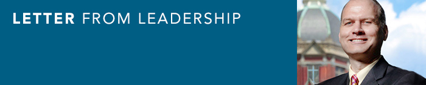
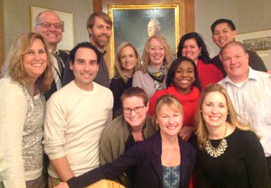

|  |
President John Hundt
We are excited to launch the new format of our publication, The Cutting Edge.
This new format, which the Cutting Edge Committee has developed, will allow our newsletter to be read in multiple formats (desktop, smart phone, paper), and it will facilitate more frequent communication with our members. As the new format divides the typical quarterly information into shorter, easier-to-read issues, it will align with the following content areas:
- Letter from Leadership: Information from one of our board members depending on the content found in that edition.
- Mission: Relevant content that focuses on the missions we each serve daily. This will range from funds flow to faculty compensation to clinical operations or research best practices.
- People: Information about AASA members. This is where you can find recent new member names, updates on member promotions and our member spotlight feature.
- Develop: Articles and information related to professional development. This is where you can find book reviews and tool kit items related to developing yourself as a leader and person.
- Education: Upcoming AASA education information. We will share.
In this inaugural edition, we are highlighting our midyear retreats within all categories. Thank you to everyone who has provided content over the past year for The Cutting Edge. Please continue to send articles or topic ideas to Megan Berlinger at mberling@wakehealth.edu.
There is still time to sign up for the upcoming AASA midyear retreats. In the past, we have done this within our regional groupings, but this year we are inviting people to choose whichever retreat they are most interested. There are links to the retreat sign-up in this newsletter.
Dan Ott and Rebecca Napier are co-hosting the retreat in Dallas, Texas, on April 16 and April 17. Their theme is “Show me the money!” with a focus on revenue cycle best practices and cost-savings initiatives.
Kira Martin and Sean Hernandez are putting on the retreat in Seattle, Wash., on April 30 and May 1. The theme of this retreat is “Breaking Barriers, Building Bridges.”
I am really looking forward to attending both retreats this year. Like most of you, I am in the midst of budgeting for next fiscal year. It seems each year gets harder and harder to develop a budget that balances.
Our biggest dilemma is balancing the heavy pressures on cost and quality from our medical centers while trying to live on professional fee revenues that are almost 100 percent volume driven. The state of Maryland made things more interesting last year by providing a fixed revenue budget for care given to Maryland residents. I am sure you are having similar challenges. I hope to get some ideas from you all at the retreats.
My first experience with AASA was a regional retreat at Duke. I met some great people with whom I am still in contact.
C.S. Lewis said: “The next best thing to being wise oneself is to live in a circle of those who are.” I always feel like I learn so much from the wisdom of my AASA colleagues at these events or at least I learn that I am not alone.
AASA President John Hundt is a Department of Surgery Administrator at Johns Hopkins Medicine.
The 2015 AASA Board of Directors

Clockwise from John Hundt in upper left corner.
- John Hundt, President, Johns Hopkins Health System
- Jamie Meyer, Past President, Medical University in South Carolina
- Megan Berlinger, Secretary, Wake Forest Baptist Health
- Stephanie Farmer, Vice President, University of Colorado
- Cristal Moore, Membership, Johns Hopkins Health System
- Rebecca Napier, South Regional Representative, UT Southwestern Medical Center
- Benson Won, Treasurer, University of California Davis
- Dan Ott, East Regional Representative, Yale University School of Medicine
- Stephanie Kearney, Co-chair, Education Committee, Baylor
- Teri Keeler, Education Chair, University of Wisconsin – Madison
- Kira Martin, West Regional Representative, University of Washington
- Shaun Hernandez, Midwest Regional Representative, University of Wisconsin, School of Medicine and Public Health
- Stephanie Schroeder, Communications, University of Michigan